The drawer is your dock. Pull the brass handle and the things you keep close are there, on green felt.
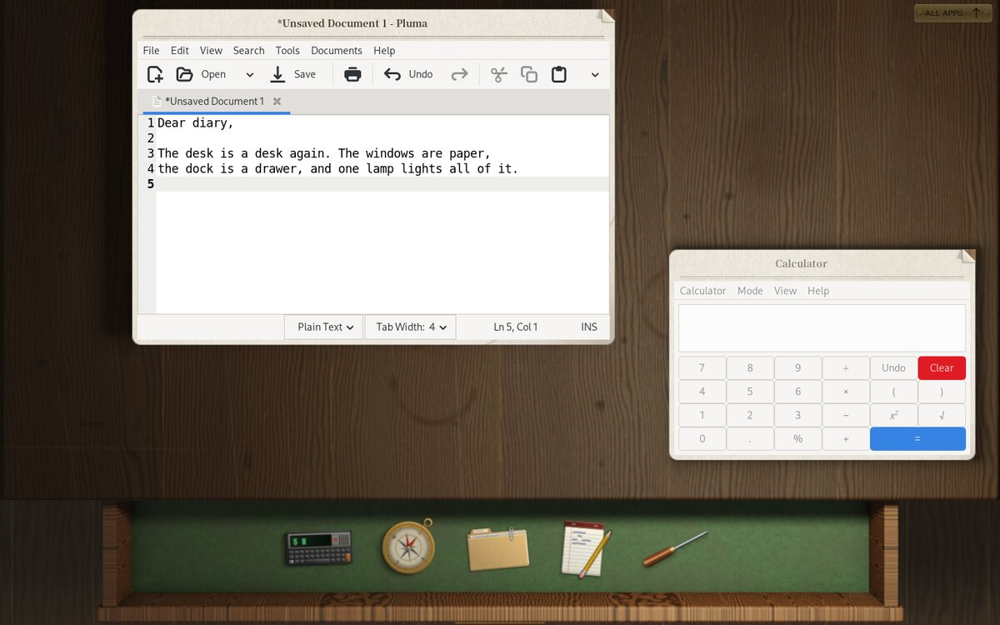
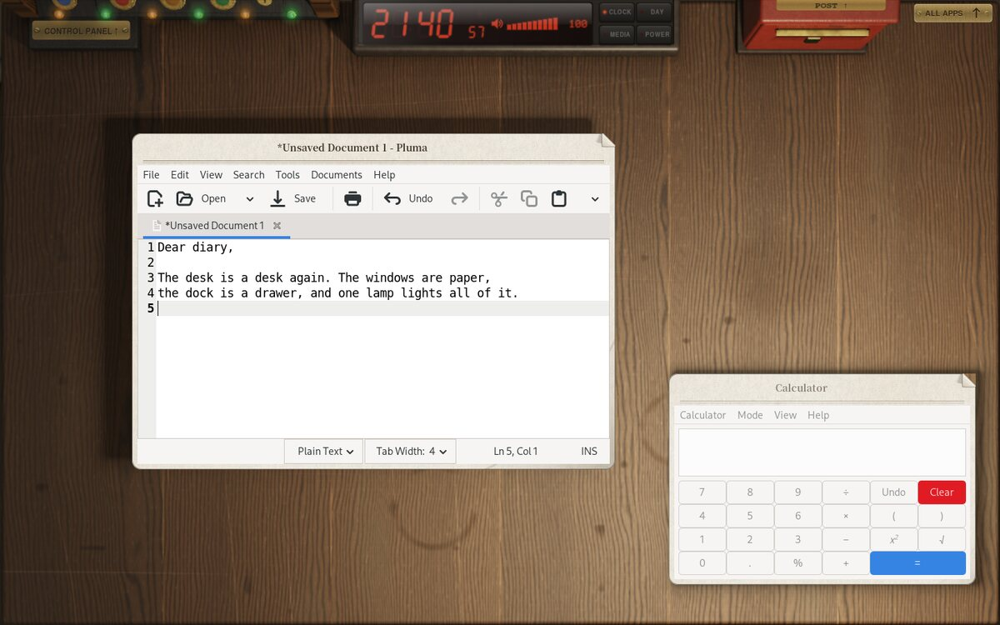
A Skeuomorphic Wayland Compositor for Linux.
Free and open source under the MIT License. Version 0.1.4 (beta) for Debian, Ubuntu, Arch Linux and Fedora.
The drawer is your dock. Pull the brass handle and the things you keep close are there, on green felt.

Turn down the corner. Fold, Unfold and Discard are printed on the back of every window.
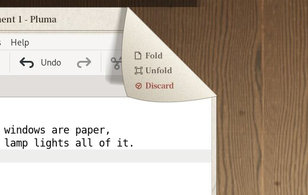
Your apps, on a bookshelf. Each category is a ring binder. Take a sheet, and the app opens on it.
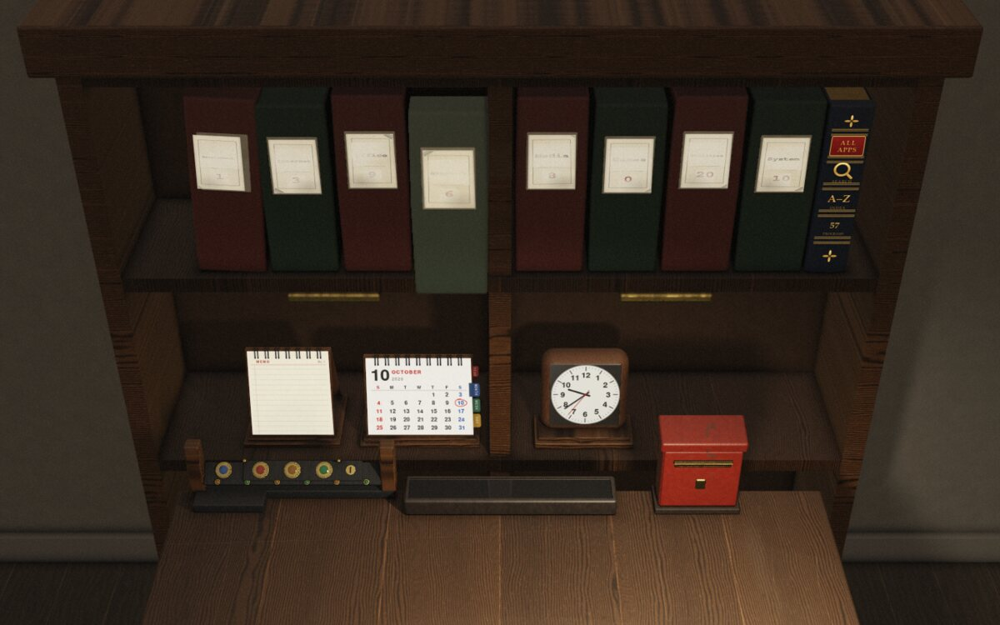
Notifications arrive by post. Letters show the sender and subject. Take one out and carry it anywhere.
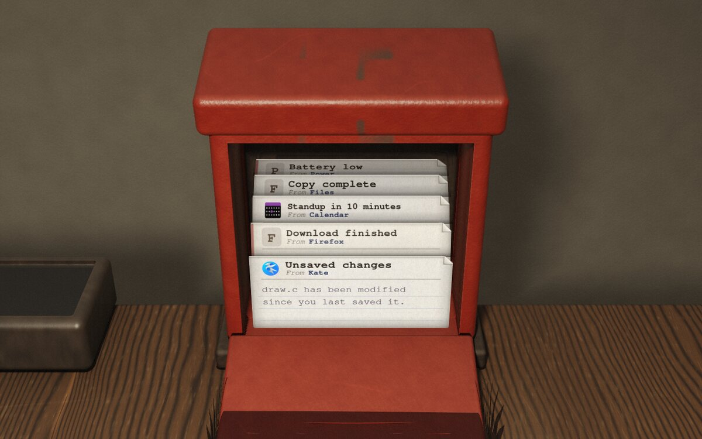
A Control Panel with real meters. A volume knob, levers for the network and Bluetooth, and a fader for the lamp.
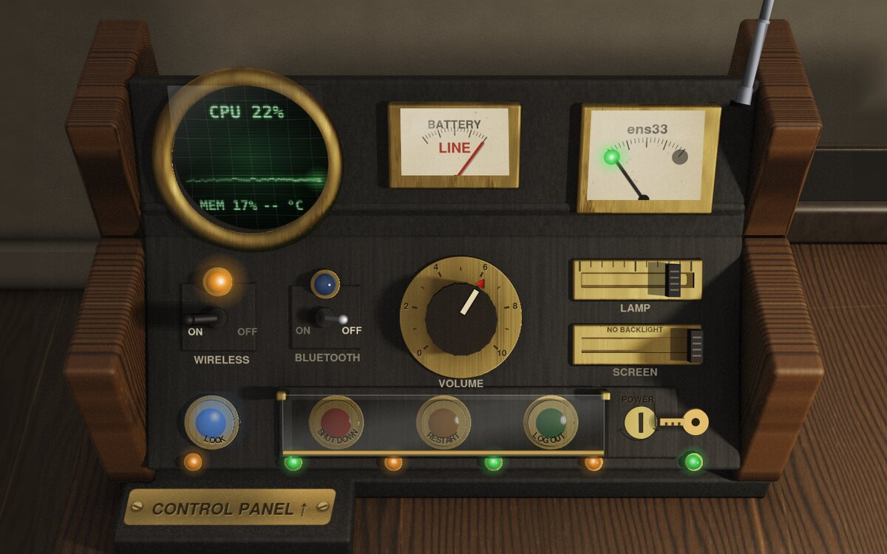
Plans, stuck onto the day. A desk calendar with a notebook of to-dos, and notes you peel off.
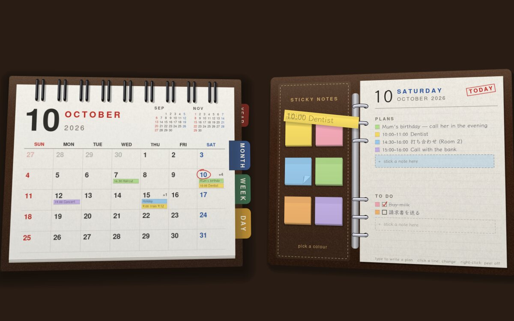
Fold it like a letter. A minimized window is left on the desk, under the others, as paper put down is.
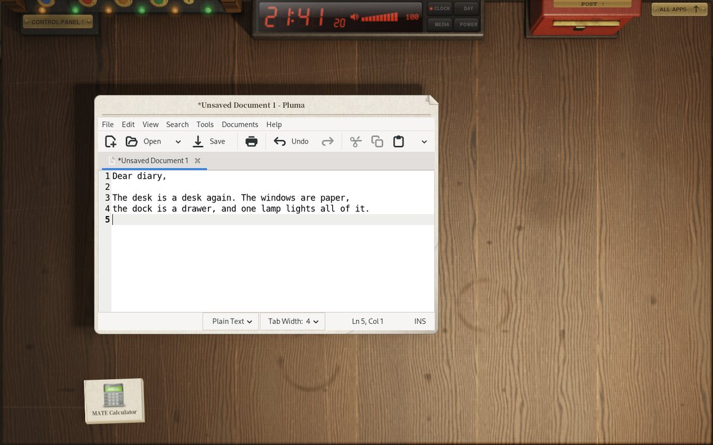
Real-time lighting
Move the pointer to move the lamp
The room is ray-traced. Desk, shelf, console and post box are traced on the GPU with OpenGL ES 3, with a CPU tracer to fall back on — and cached for your screen size, so it only happens once.
Everything shares the same light. Windows, letters and folded paper are all lit by the one desk lamp. At login the room starts dark, and the lamp comes up as the room is made.
Paper windows
Real fibre, real thickness. Each window sits on a cream sheet with a dog-eared corner. Drag an edge and more paper is pulled out from behind it.
What's on the back. Hold the pointer on the corner and it lifts: Fold leaves the window on the desk like a letter, Unfold opens it out, and Discard crumples it into a ball and tosses it.
Performance
Written in C, straight on wlroots. No toolkit and no browser engine in the shell — just the compositor drawing the desk itself.
Fast without a GPU, too. Once the room is traced, even one core with no GPU drops no frames. Graphics go from Ultra down to a 2D Fallback for virtual machines.
Choose a part of the desk to see it up close.
Hands on
A small DEsk, right here in the page. Drag the paper around, turn down a corner, pull the drawer and open the post box. The real one is traced in 3D; this one is just for getting a feel.
Each category is a ring binder whose sheets fan from a single ring. Take one, and it's carried down to the desk.
Every program from A to Z, with thumb tabs and a line at the top to type into.
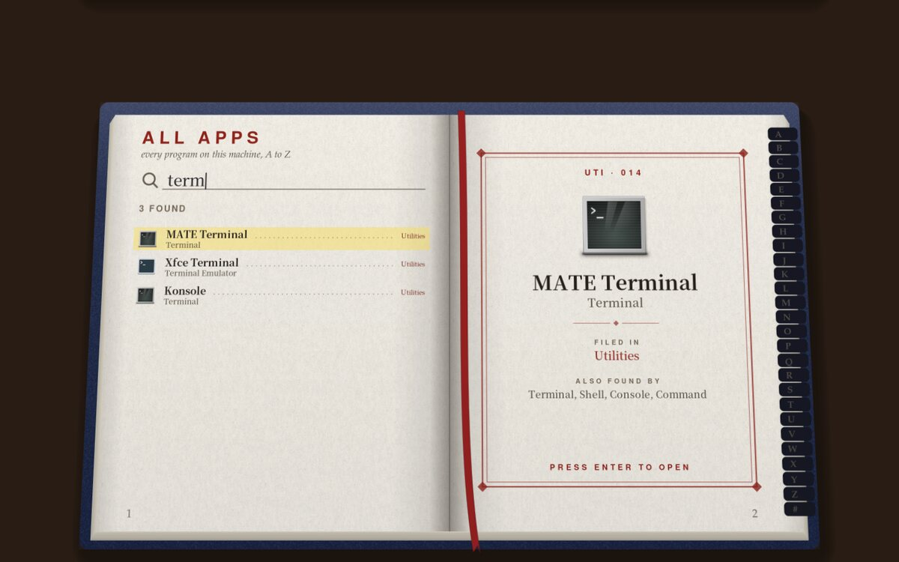
Letters show the sender and subject. One taken out lies on the desk.
A valve-era machine built into the back of the desk: real meters, a volume knob, network and Bluetooth levers, and faders for the lamp and the screen's backlight.
Traced in 3D with the hour's light — the sun worked out from your city — and, if you allow it, the real weather.
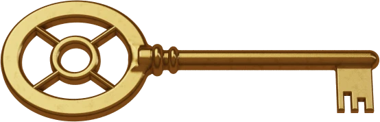
Everything DEsk prints, switched live.
Processor, memory, 2D, 3D and disk, each rated 1.0–9.9 on brass-rimmed meters.
The calendar has a notebook of plans and to-dos; notes are peeled off and stuck onto the day. The memo pad's sheets turn over the wire.
A red LED clock stands at the back of the desk. Four keys beside it turn up its pages, and light as your hand comes near.
Press the keys. Press one again to go back to the time.
Every other screen shows more of the desk's boards, running on from it, for windows to lie on.
They run through Xwayland — and windows that draw their own frames sit on paper as well.
The installer rates the machine and picks a level for it. Your own choice always wins.
Tap to click, natural scrolling, pointer speed, keyboard layouts and key repeat — applied at once to what's plugged in.
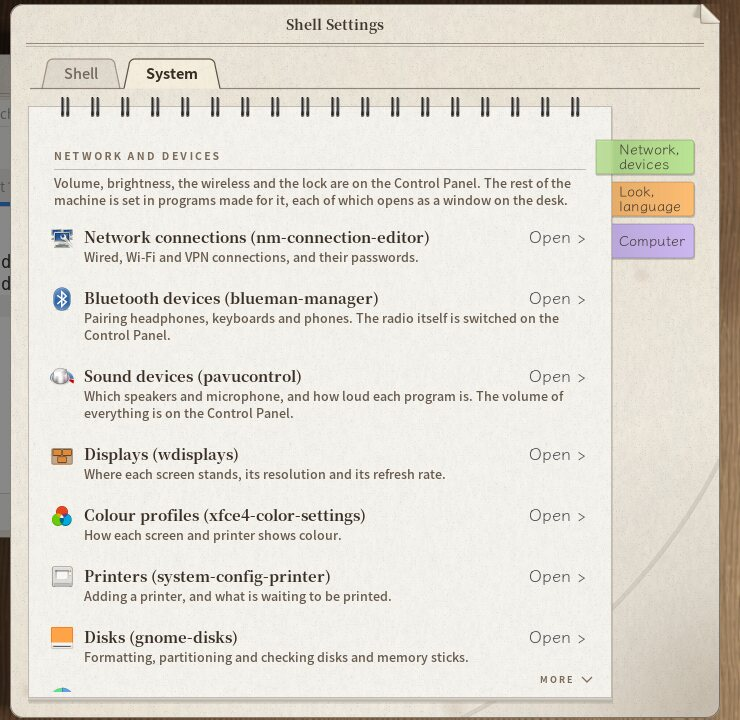
On certain days of the year, the door and the clock have something more for you. There's no setting for it — you'll see on the day.
DEsk is installed as a whole desktop, like GNOME or KDE. It runs on these distributions:
Everything works. The first login takes longer.
--bareThe room traced in seconds, with room to spare.
Measured with the CPU, GPU and memory cut down (nested, 1440×900). Only the first login draws the room: about 14–18 seconds until the lamp comes on, with a GPU. Without one, DEsk goes to 2D Fallback by itself, and the first login takes about 16 seconds on two cores (a 3D level chosen by hand takes about 10 minutes there). After that it's cached.
One installer per distribution brings everything DEsk needs. It shows what it will install, and asks first.
Download the latest release from the Releases page and unpack it — or clone the repository.
$ git clone https://github.com/fyzugx/DEsk.git
$ cd DEskThe packages come straight from Debian.
$ sudo sh scripts/install_debian.sh--yes takes the suggested answers. --no-apps skips the recommended programs. Run the same line again to update; your settings are kept.
Pick DEsk on the login screen. The first login draws the room once — a few seconds on a GPU, longer without one. After that, it starts at once.
wlroots 0.18, wayland, wayland-protocols, xkbcommon, cairo, pixman, fontconfig, libdrm and PAM. Optional: libsystemd, libpulse, libinput, EGL/GLES/gbm for GPU ray tracing, and Xwayland.
$ meson setup build
$ meson compile -C buildRun DEsk nested inside your current session, with a terminal on the desk:
$ ./build/desk -s footDebian 13; Ubuntu 24.04 and 26.04 (with Linux Mint and Pop!_OS); Arch Linux (with EndeavourOS and Manjaro); and Fedora 43 and 44 (with Nobara). Each family has its own installer, which shows what it will install and asks before it starts.
No. DEsk is a Wayland desktop for Linux, and there are installers only for the four families above.
To update, unpack the new release and run the same install line again: there's no need to uninstall first, and your settings and the room already drawn are kept. To remove it, log out of DEsk and, from another desktop or a console, run sudo sh scripts/uninstall.sh in the release folder. It shows what it will remove and asks first, and leaves your settings and your distribution's packages alone.
A whole desktop, chosen at login like GNOME or KDE. DEsk draws the desk itself: the paper windows, the drawer, the bookcase, the Control Panel, the post box and the lock screen. For the rest it uses free programs that already exist, mostly from Xfce and MATE, which the installer brings along (unless you pass --no-apps).
Super+D opens and closes the drawer (or pull its brass handle), Super+A brings up the bookcase of apps, Alt+Tab switches windows, Super+F puts a window on the whole screen, and Super+L locks the desk.
Put favourites in the drawer: in a binder, rest the pointer on the top right corner of an app's sheet, and when it turns over, choose Into the drawer. The binders are filled by each app's category; to file one somewhere else, add a line such as org.kde.kate.desktop = Development to ~/.config/desk/shelves.conf.
Yes. Apps without Wayland support run through Xwayland, which starts only when the first one opens, and they sit on paper like every other window. Super+F puts a game on the whole screen. One gap: dragging from an X11 app into a Wayland app doesn't work yet.
No GPU is needed. When the screen is drawn by the processor (no GPU, a GPU without its driver, or a virtual machine without 3D), DEsk moves itself to its lightest level, 2D Fallback, and leaves a letter in the post box to say so. In a virtual machine, turn on 3D acceleration for the full desk.
The first time DEsk starts at a screen size, it ray-traces the room once and keeps it: a few seconds with a GPU, longer without one. You can use the desk meanwhile (a letter on it says how it's going), and later logins start at once.
The desk is on one screen; the others carry on its wood, so windows can be put there, maximized and made full screen, while the bookcase, Control Panel and post box stay on the desk's screen. On high-density screens DEsk sizes its own things correctly, but doesn't scale apps yet, so their windows come out small.
Press Ctrl+Alt+Del twice quickly: the desk is set up again and your windows stay open. Three times logs you out. In VMware, send Ctrl+Alt+Insert instead, as the host keeps Ctrl+Alt+Del for itself.
Some monitors say they were unplugged when they sleep, and before v0.1.4 that ended the session. Now DEsk keeps it and waits for the screen, and wakes it when you press a key or move the mouse. If the monitor stays asleep, press its power button; turning off its deep-sleep setting avoids it.
Run desk-report in a terminal (it works even when DEsk won't start) and attach the file it makes, ~/desk-report.txt, saying what you did and what happened. It takes out your user name, home folder, machine name and network addresses, but please read it before you send it. Post it on GitHub or Discord.